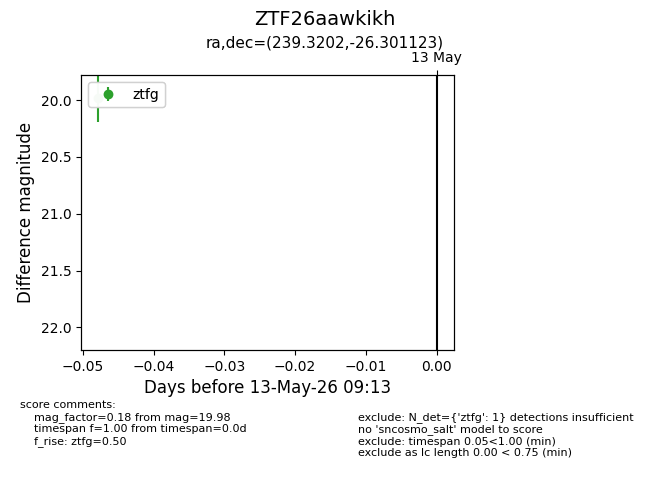
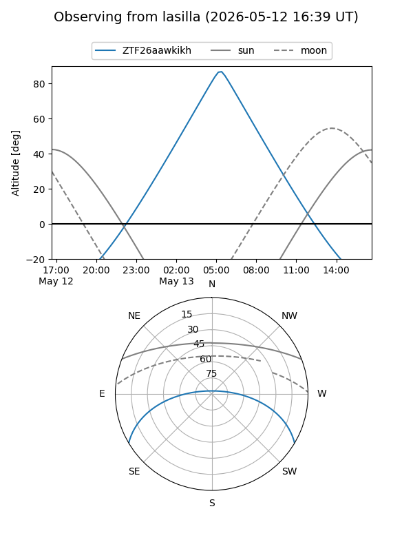
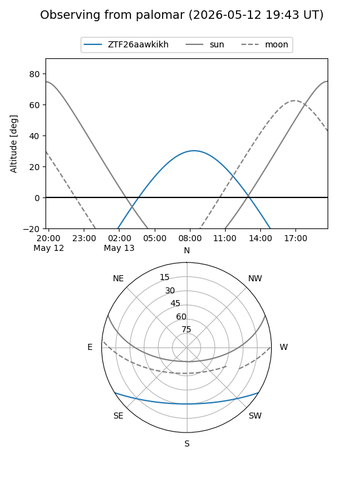

ZTF26aawkikh
Target ZTF26aawkikh at 2026-05-13 09:15
Aliases and brokers:
FINK: link
Lasair: link
ALeRCE: link
alt names
ZTF26aawkikh (ztf,fink_ztf)
Coordinates:
equatorial (ra, dec) = 239.3202,-26.30112
equatorial (HMS+DMS) = 15:57:16.84,-26:18:04.04
galactic (l, b) = (346.8053,+20.33830)
Flags:
Photometry:
last ztfg=19.98
1 ztfg detections
Lightcurve

Visibility


Additional plots